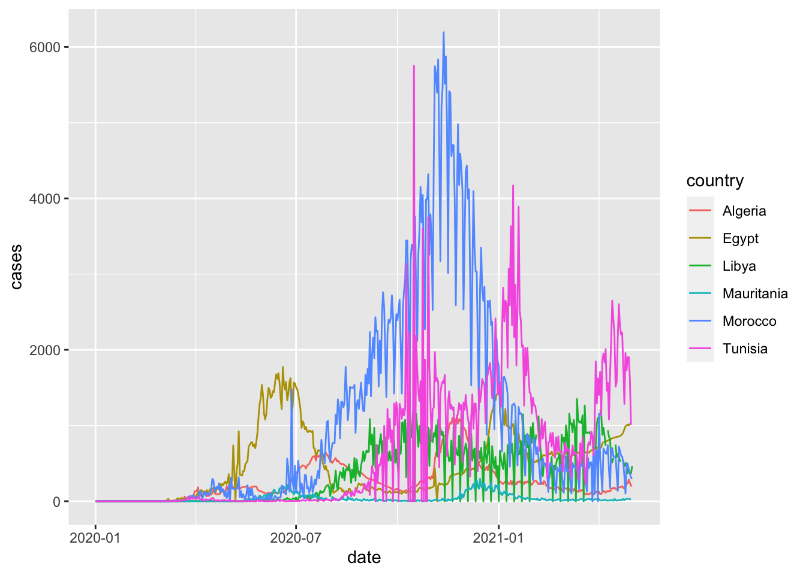
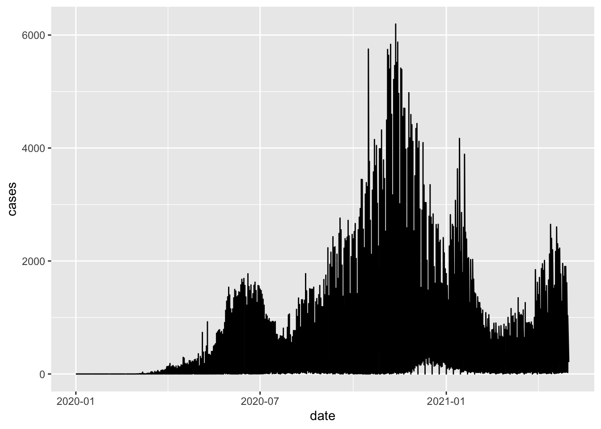
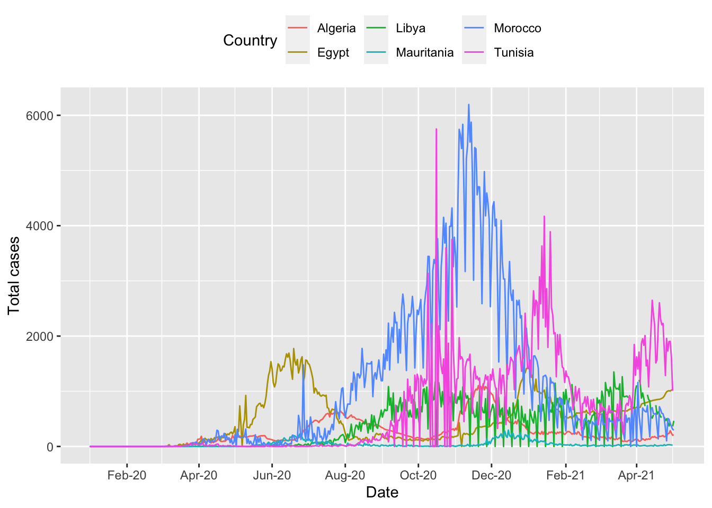

5 Presenting your data
5.1 Presenting your results in a table
And use functions from another package to display the information in a more user-friendly table.
The gt package provides a very flexible interface for building tables from your data.
pacman::p_load(gt)The documentation describing the functions can be found here.
Below is an example using the dataset we have built.
northern_africa_cases_country_table <- northern_africa_cases_country %>%
gt() %>%
tab_header(
title = md("COVID-19 in Northern Africa")
) %>%
cols_label(
country = "Country",
total_covid_cases = "N",
percentage = "% of total cases in Northern Africa"
) %>%
tab_spanner(
label = "Confirmed cases",
columns = c(total_covid_cases,percentage)
) %>%
fmt_number(
columns = total_covid_cases,
decimals=0,
use_seps = TRUE
) %>%
cols_align(
align = "center",
columns = c(total_covid_cases, percentage)
)
northern_africa_cases_country_table| COVID-19 in Northern Africa | ||
|---|---|---|
| Country | Confirmed cases | |
| N | % of total cases in Northern Africa | |
| Morocco | 511,856 | 37.3% |
| Tunisia | 311,743 | 22.7% |
| Egypt | 228,584 | 16.7% |
| Libya | 178,335 | 13.0% |
| Algeria | 122,522 | 8.9% |
| Mauritania | 18,429 | 1.3% |
gt has many options for customising tables. To demonstrate this, we will build a table to show when each country in Africa recorded its first COVID-19 case. This example uses some of the techniques demonstrated in this article.
first_cases_africa <- africa_covid_cases_long %>%
select(date=date_format,region=AFRICAN_REGION, country=COUNTRY_NAME, cases) %>%
group_by(region,country) %>%
filter(cases>0) %>%
filter(date == min(date, na.rm=TRUE)) %>%
ungroup()
first_cases_africa_table <- first_cases_africa %>%
select(region,country,date) %>%
group_by(region) %>%
arrange(date) %>%
gt() %>%
tab_header(
title = md("When did countries in Africa record their first case of COVID-19?")
) %>%
fmt_date(
columns = date,
date_style = 4
) %>%
opt_all_caps() %>%
#Use the Chivo font
#Note the great 'google_font' function in 'gt' that removes the need to pre-load fonts
opt_table_font(
font = list(
google_font("Chivo"),
default_fonts()
)
) %>%
cols_label(
country = "Country",
date = "Date"
) %>%
cols_align(
align = "center",
columns = c(country, date)
) %>%
tab_options(
column_labels.border.top.width = px(3),
column_labels.border.top.color = "transparent",
table.border.top.color = "transparent",
table.border.bottom.color = "transparent",
data_row.padding = px(3),
source_notes.font.size = 12,
heading.align = "left",
#Adjust grouped rows to make them stand out
row_group.background.color = "grey") %>%
tab_source_note(source_note = "Data: Compiled from national governments and WHO by Humanitarian Emergency Response Africa (HERA)")
first_cases_africa_table| When did countries in Africa record their first case of COVID-19? | |
|---|---|
| Country | Date |
| Northern Africa | |
| Egypt | Friday 14 February 2020 |
| Algeria | Tuesday 25 February 2020 |
| Morocco | Monday 2 March 2020 |
| Tunisia | Monday 2 March 2020 |
| Mauritania | Friday 13 March 2020 |
| Libya | Tuesday 24 March 2020 |
| Western Africa | |
| Nigeria | Thursday 27 February 2020 |
| Senegal | Friday 28 February 2020 |
| Togo | Friday 6 March 2020 |
| Burkina Faso | Monday 9 March 2020 |
| Cote d'Ivoire | Wednesday 11 March 2020 |
| Ghana | Thursday 12 March 2020 |
| Guinea | Thursday 12 March 2020 |
| Benin | Monday 16 March 2020 |
| Gambia | Monday 16 March 2020 |
| Liberia | Monday 16 March 2020 |
| Niger | Thursday 19 March 2020 |
| Guinea-Bissau | Wednesday 25 March 2020 |
| Mali | Wednesday 25 March 2020 |
| Sierra Leone | Tuesday 31 March 2020 |
| Southern Africa | |
| South Africa | Thursday 5 March 2020 |
| Eswatini | Saturday 14 March 2020 |
| Namibia | Saturday 14 March 2020 |
| Zimbabwe | Friday 20 March 2020 |
| Angola | Saturday 21 March 2020 |
| Zambia | Sunday 22 March 2020 |
| Mozambique | Monday 23 March 2020 |
| Botswana | Monday 30 March 2020 |
| Malawi | Thursday 2 April 2020 |
| Lesotho | Tuesday 12 May 2020 |
| Central Africa | |
| Cameroon | Friday 6 March 2020 |
| Democratic Republic of the Congo | Tuesday 10 March 2020 |
| Gabon | Thursday 12 March 2020 |
| Central African Republic | Saturday 14 March 2020 |
| Equatorial Guinea | Saturday 14 March 2020 |
| Chad | Thursday 19 March 2020 |
| Congo | Sunday 22 March 2020 |
| Burundi | Tuesday 31 March 2020 |
| Sao Tome and Principe | Monday 6 April 2020 |
| Eastern Africa | |
| Ethiopia | Friday 13 March 2020 |
| Kenya | Friday 13 March 2020 |
| Sudan | Friday 13 March 2020 |
| Rwanda | Saturday 14 March 2020 |
| Somalia | Monday 16 March 2020 |
| Mayotte | Tuesday 17 March 2020 |
| Tanzania | Tuesday 17 March 2020 |
| Djibouti | Wednesday 18 March 2020 |
| Mauritius | Wednesday 18 March 2020 |
| Madagascar | Friday 20 March 2020 |
| Eritrea | Saturday 21 March 2020 |
| Uganda | Saturday 21 March 2020 |
| South Sudan | Monday 6 April 2020 |
| Comoros | Thursday 30 April 2020 |
| Data: Compiled from national governments and WHO by Humanitarian Emergency Response Africa (HERA) | |
5.2 Visualising data using ggplot
One of the key strengths of R is visualising data. There are many packages which have functions you can use to make graphs, tables, mapsthe list is endless!
The first package of functions we will use for visualising data is another core tidyverse package called ggplot2. This is commonly referred to as ggplot
We have already loaded the package when we ran library(tidyverse)
You can also choose to only load the ggplot2 package by typing library(ggplot2)
library(ggplot2)The Epidemiologist R handbook has 2 sections focused on ggplot
These sections contain very helpful explanations of many of the functions available with ggplot. There are also a number of excellent references for every type of graph you want to make.
We will walk through some common examples to teach some of the most common approaches
5.2.1 Epicurves
Firstly, we will produce epicurves to describe the distribution of COVID-19 cases (y axis) over time (x axis).
Make a graph of confirmed COVID-19 cases in Northern Africa
ggplot(northern_africa, aes(x=date,y=cases)) +
geom_line()## Warning: Removed 7 row(s) containing missing values (geom_path).
This command has generated a line graph of confirmed COVID-19 cases for countries in Northern Africa.
From earlier steps, we know that the dataset northern_africa contains data from multiple countries: `r unique(northern_africa$country
We can add more information to the ggplot command to draw separate lines for each country
ggplot(northern_africa, aes(x=date,y=cases, color=country)) +
geom_line()## Warning: Removed 9 row(s) containing missing values (geom_path).
To make the graph more presentable, we can add more options to the ggplot command
ggplot(northern_africa, aes(x=date,y=cases, color=country)) +
geom_line() +
labs(x='Date', y='Total cases', color='Country') + #label axes
theme(legend.position='top') + #place legend at top of graph
scale_x_date(date_breaks = '2 months', #set x axis to have 2 month breaks
date_minor_breaks = '1 month', #set x axis to have 1 month breaks
date_labels = '%d-%m-%y') #change label for x axis## Warning: Removed 9 row(s) containing missing values (geom_path).
More information on plotting time-series data using ggplot can be found here.
It is still difficult to see the data for each country. There is a helpful command called facet_wrap to fix this and allow us to show multiple epicurves by country.
ggplot(northern_africa, aes(x=date,y=cases, color=country)) +
geom_col() +
labs(x='Date', y='Total cases') + #label axes
theme(legend.position='none') + #remove legend by setting position to 'none'
scale_x_date(date_breaks = '4 months', #set x axis to have 2 month breaks
date_minor_breaks = '2 months', #set x axis to have 1 month breaks
date_labels = '%m-%Y') + #change label for x axis
facet_wrap(~country) # this will create a separate graph for each country## Warning: Removed 17 rows containing missing values (position_stack).
5.2.2 Visualising moving average data
In a previous section, we added indicators for the rolling average and rolling sum of cases. These indicators can be helpful for identifying trends over time.
moroocco_covid_cases_graph <- morocco_covid_cases_mean %>%
ggplot() +
geom_col(aes(x=date, y=cases, color=country)) +
geom_line(aes(x=date, y=cases_7day_mean)) +
labs(x='Month-Year',
y='Total cases',
title='Cases and 7-day average (black line)') +
theme(legend.position='none') +
scale_x_date(date_breaks = '2 months',
date_minor_breaks = '1 month',
date_labels = '%m-%y')
moroocco_covid_cases_graph## Warning: Removed 1 rows containing missing values (position_stack).## Warning: Removed 7 row(s) containing missing values (geom_path).
This chart shows the total number of COVID-19 cases for each day in Morocco between January 1, 2020 and May 3, 2021. The red bars show the reported case numbers for each day while the black line show the 7-day average of cases. We can see that there are several dates with substantially higher numbers of cases compared to the neighbouring dates. This could be due to increased testing on specific days but it is more likely due to delays in reporting leading to a backlog of cases reported on specific days. The black line smooths out these differences, allowing us to see the overall trend.